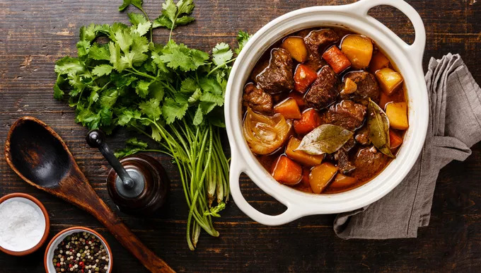
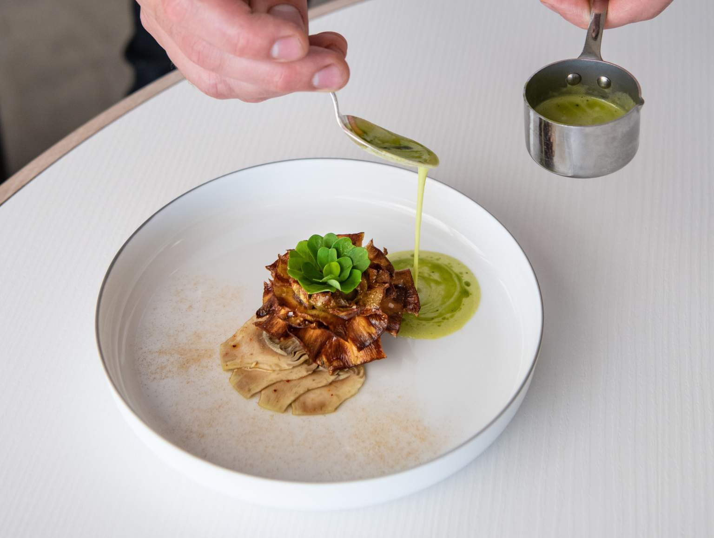

Nos Spécialités

Spécialité 1
Description de la spécialité 1. Un plat délicieux préparé avec des ingrédients frais et locaux.

Escargots au Beurre à l’Ail
Véritable emblème du terroir, nos escargots de Bourgogne sont préparés avec un beurre de baratte fermier, parfumé à l’ail rose de Lautrec et au persil frais. Sublimés par une pointe de fleur de sel et de poivre de Kampot, ils sont gratinés au four pour une texture fondante et savoureuse.

Spécialité 3
Description de la spécialité 3. Un plat traditionnel revisité avec une touche moderne.